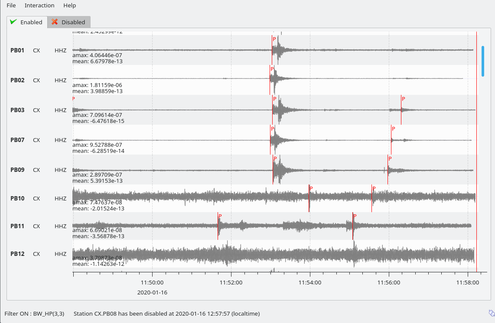

Welcome¶
This is the documentation for the SeisComP version 5.5.3 Release.
Please consider contributing to this documentation.
scmv: MapView with sensor stations and detected events¶

scrttv: TraceView with filtered data from configured streams¶

scolv: OriginLocatorView with event and phase information¶

scolv: OriginLocatorView phase picker with waveforms and phase information¶
Understanding SeisComP¶
- Introduction and Scope
- Overview
- Historical Information
- Concepts
- Messaging: Exchanging information in real-time processing
- Modules: Daemon programs and command-line tools
- Plugins: Extensions to modules
- Database: Storing meta data, configurations and data products
- Waveform archive: Storing raw waveform data
- RecordStream: Access to data from real-time servers or archives
- Inventory: Station meta data
- Configuration: Inventory, module and binding configurations
- Processing: Magnitude computation
- Processing: Locator types
- Glossary
- License
- Citation
- References
- Change Log
Operating SeisComP¶
- SeisComP Installation
- Database Server Configuration
- Getting Started with SeisComP
- System management
- Tutorials
- Installation on Ubuntu
- Upgrading SeisComP
- Add a new station
- Get real-time data from a remote Seedlink server (single station)
- Set up local waveform archiving
- Configure real-time processing
- Add real-time stations from GEOFON
- Enable local FDSNWS server
- Play back archived waveforms
- Help! I’m stuck! Now what?
- Create a new tutorial